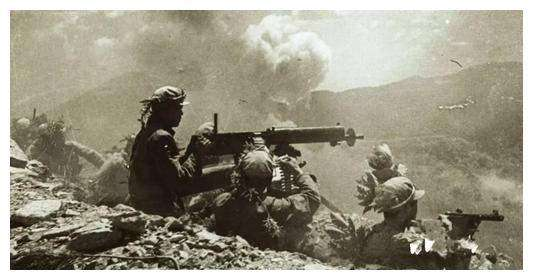

铁原阻击战
在朝鲜战争史上，有一场战役被称作是志愿军的生死之战，它的惨烈程度比得过上甘岭战役，炮火密集 程度不亚于长津湖战役，是扭转朝鲜战局形势的关键一战，它就是铁原阻击战。

1951年4月22日，彭德怀下令发起朝鲜战争第5次战役，对于第5次战役结果，彭老总显然是不满意的，虽然我 军攻占了很多要地，但是后勤补给这个问题不解决，后面的仗只会越难越难打。此时他还接到一个消息，范佛里特带 领的第八兵团和第60军180师对上了，对方还讨到了不少便宜，不过很奇怪的是，对方和180师开战之后，并没有像 往常一样固守阵地，反而快速北进，即使是遇到志愿军攻击部队，也只是象征性交火，而后继续加速北进。这家伙到 底是想干嘛？为什么会这么着急？彭老总观察着地图里范弗里特的行军轨迹默默地想。突然间老司令一下明白了“不好！ 他想要去铁原！”。作为朝鲜一个籍籍无名的小地方，铁原并没有什么特殊之处，然而范佛里特的快速前行使得它成为了 整个朝鲜战局的关键点。之前考虑到铁原地势平坦，交通便利，所以洪学智将它选为了志愿军后勤补给中转站。因为国内 入朝的物资都要在此中转，志愿军九成以上的补给都在这里，所以铁原就是志愿军的心脏。李奇微发现我们后勤补给这个 致命弱点之后就想掐断这条生命线，铁原就是他的目标。彭老总焦头烂额，一直在观看铁原附近有没有我们的军队，然而 离铁原最近的部队撤回来也要7天，现在的铁原根本没法等。千钧一发之际，彭老总发现志愿军第19兵团63军即将到达铁原， 这绝对是一个惊喜。63军开赴铁原不是因为收到了上级任务，只是因为在西线作战时损失比较严重，人困马乏，粮食和弹药 都不多了，所以与兄弟部队交接之后，奉命撤回铁原进行休整。

5月28日，杨得志找到指挥所，见到了一身顽疾的傅崇碧，当看着他躺在担架上还与师长商量作战对策时，杨得志眼眶 湿润了，不足敌军一半的兵力，差距悬殊的作战武器，这样的形势之下，如果想要打胜仗就必须要出奇兵。战术上，傅崇碧 准备采用正面抗击与侧翼相结合的方式，趁夜间派部队袭击敌敌人。从当前敌人的前进路线来看，美军会将重点放在左侧势 力上，区区60分钟，李奇微就向我军189师投放了4500吨炮弹，从铁原到涟川的这条线一直都是战火弥漫。5月31日，美军 的主力到铁原附近之后，189师师长蔡长远开始将他的军队分散成200多个单位，驻扎在200多个地点，6月1日至6月3日， 这三天志愿军承担的强度难以想象，由于189师兵力不足，所以傅崇碧准备让188师进入阵地换防，188师过来至少还要1天 的时间，这也就意外着189师必须在坚守一天。种子山是很重要的一个据点，只有拿下它才能阻止敌军前行，傅崇碧特派566 团担任这个任务，凭借顽强的奋斗，566团完成了这个使命。然而6月3日，美军再次向种子山发动了猛烈进攻，在用尽最后一 颗手榴弹后，566团及其全团将士们全部阵亡了。蔡长远又重新带领将士们分兵两路拿回了种子山，189师顽强抵抗，生生拖 了美军6天。6月4日，188师师长张英辉带领将士们进入预备阵地，又打到了6月9日。之后187师长徐信又带兵守了最后几天， 将前线所有的炮火集中起来，悄无声息地走到敌军阵地，6月10日正式对联合国军发起反攻，美军上百辆坦克、火炮都被炸毁了， 只能等待后方物资供给。6月11日，李奇微下达暂停攻击铁原的命令，12日，志愿军完成所有战略转移，63军撤离阵地，待美军 再次准备进攻铁原时，志愿军的援军已到，敌军被打得灰头土脸。铁原阻击战，63军12天击溃美军4个师，这场胜利成功地扭转 了朝鲜战争局势，彭老总后来去探望63军的时候就曾说道：“祖国感谢你们，我彭德怀感谢你们，我要向祖国，向党中央，向毛 主席汇报，你们是真正的铁军。”